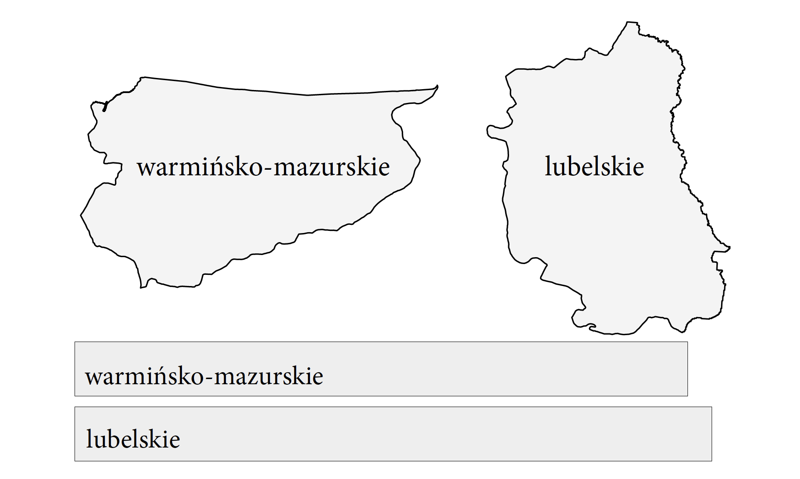

4 Dziury…
W tym rozdziale zmierzymy się z trudnościami w interpretowaniu kolorów, iluzjami dotyczącymi kształtów, a także innymi niedoskonałościami ludzkiego systemu percepcji obrazu. Systemu, który ewoluował przez tysiące lat, ale po to, by zapewnić nam przetrwanie na sawannie, a nie precyzyjne odczytywanie wykresów statystycznych. Zrozumienie mechanizmów rządzących percepcją to ważny, choć często pomijany krok na drodze do tworzenia czytelnych grafik. Ja sam dosyć długo skupiony byłem wyłącznie na poprawności matematycznej w kodowaniu danych na wykresach, nie przejmując się ograniczeniami percepcji odbiorcy. Ale dekadę temu, za sprawą serii rozmów z Rossem Ihaką, zmieniłem swój sposób myślenia całkowicie. Ross Ihaka to jeden z dwóch głównych twórców języka R, człowiek skupiony na tworzeniu narzędzi do analizy statystycznej i komunikacji danych. W 2005 roku opracował kurs ,,Information Visualisation’’ specjalnie dla studentów statystyki, po to by lepiej zrozumieli, jak działa droga wzrokowa, co wpływa na percepcję obrazu czy percepcję kolorów. Kurs jest dostępny pod adresem https://www.stat.auckland.ac.nz/~ihaka/courses/120/. Zobaczmy, jakie pułapki zgotowała nam percepcja, a później przedyskutujmy rozwiązania, które pozwolą zwiększyć czytelność danych na wykresach statystycznych.
Drogi Czytelniku, czas, byś poznał absolutnie najważniejszą prawdę o wizualizacji danych: Nie jest ważne, co narysowałeś na wykresie, kluczowe jest, co zostanie odczytane.
Powiesz, że to nie może być trudne? Że przecież każdy z nas od urodzenia uczy się patrzeć i szukać informacji w obrazie? Niestety dosyć często nasza percepcja zachowuje się niezgodnie z naszą intuicją. Gorzej – ona celowo zwodzi nas na manowce. Jeżeli chcemy, aby nasze wykresy były dobrze odczytywane, powinniśmy poznać kilka ograniczeń naszej percepcji oraz nauczyć się sobie z nimi radzić. Poniżej omówimy trzy rodzaje problemów, których dostarcza nam nasza percepcja. Na szczęście z każdym z nich można sobie jakoś poradzić.
4.1 Dziury w percepcji kolorów
Kolor jaki jest, każdy widzi. Czyżby? Zobaczmy, jak o kolorach myślało dwóch wielkich badaczy – Isaak Newton i Johann Wolfgang von Goethe. Już w szkole podstawowej poznajemy perspektywę Newtona, uczymy się o fizycznych właściwościach światła, o tym, że białe światło jest mieszaniną fal różnych długości, które można rozszczepić pryzmatem, o zresztą Isaac Newton pokazał w 1672 roku. Takie myślenie o kolorach skupione jest na fizycznych właściwościach mieszaniny fal różnych długości.
Zupełnie inaczej o kolorach pisał Johann Wolfgang von Goethe. Zauważył on pewne rozbieżności pomiędzy Newtonowskim fizycznym opisem światła a postrzeganiem kolorów przez człowieka. Zaobserwował on, że kolor pojawia się nie tylko tam, gdzie jest światło, ale też tam, gdzie nie ma światła. Jeżeli patrzymy na silne źródło światła, takie jak słońce lub biały śnieg w słoneczny dzień, a następnie wejdziemy do zupełnie zacienionego pokoju, to zaobserwujemy wrażenie wirujących czerwonych kręgów. Z obserwacji Goethego wynikało, że miejsca ocienione wydają się mieć kolory szczególnie wtedy, gdy sąsiadują np. ze śniegiem silnie odbijającym światło. Choć cień to przecież, zgodnie z teorią Newtona, miejsce, gdzie nie ma światła, nie ma więc kolorów.
Tak więc wrażenia barwne zależą zarówno od tego, co widzieliśmy wcześniej, jak i tego, co jeszcze znajduje się w naszym polu widzenia. Swoje wyniki Goethe opublikował w 1810 roku w dziele Teoria kolorów (Goethe 1810. ), które ponoć cenił bardziej niż swoją twórczość poetycką. W swojej teorii Goethe dużą wagę przywiązywał do wrażeń kolorów, ich percepcji w zależności od różnych czynników, również emocji obserwatora. Goethe uważał, że jego teoria jest przeciwstawna do teorii Newtona.
Drogi Czytelniku, jeżeli w tym miejscu myślisz, że ta cała subiektywna teoria kolorów to ściema, to znaczy że jesteś gotów na eksperyment, który unaoczni Ci, że te same kolory mogą być różnie odczytywane. Na marginesie, na rysunku Figure 4.1 znajdziesz ilustrację opublikowaną po raz pierwszy przez Edwarda Adelsona w roku 1995. Spójrz na górny panel. Czy pola A i B na szachownicy mają różne kolory? Prawdopodobnie bez cienia wątpliwości stwierdzimy, że pole A jest ciemniejsze niż pole B. Jednak gdyby usunąć z tego rysunku kontekst, np. zasłonić palcem wszystko poza tymi polami, lub też połączyć te pola pasem, wtedy zauważymy, że w rzeczywistości są one tego samego koloru.
W zależności od kontekstu możemy sprawić, by kolor szary był postrzegany jako kolor żółty lub niebieski, czego przykładem jest zdjęcie sukienki z rysunku Figure 4.2. Kilka lat temu przez Internet przetoczyła się prawdziwa wojna o to, by ustalić, czy jest to czarno-niebieska sukienka, czy biało-złota. Począwszy od serwisu Tumblr po bardzo szanowane czasopisma naukowe dyskutowano o tej iluzji. Okazuje się, że różne osoby odczytują różnie kolory z tego zdjęcia w zależności od tego, co założą o źródle i barwie oświetlenia tej sukienki.

Jeżeli chcecie zobaczyć więcej iluzji związanych z kolorami, to warto odwiedzić Centrum Nauki Kopernik, które ma całą sekcję poświęconą kolorom. Rysunek Figure 4.3 pokazuje np. te same trzy plansze z żuczkami oświetlone różnymi kolorami. Za każdym razem inaczej odbieramy względne kolory żuczków. W zależności od oświetlenia barwa obiektów może się bardzo różnić.
Podobny problem dotyczy wykresów drukowanych np. w gazetach lub firmowych raportach, gdy oglądamy je w różnym świetle, np. dziennym lub w świetle nocnej lampki. Jeszcze inaczej ten sam wykres będzie wyglądał na ekranie laptopa, który ma wysoką jasność i wysoki kontrast.

Jakby problemów z kolorami było mało, to dodatkowo około 5% populacji ma różnego rodzaju zaburzenia związane z postrzeganiem kolorów, często nazywane ,,ślepotą barw’’.
Przyczyn zaburzeń postrzegania kolorów jest wiele, od genetycznych, przez związane z nabytymi urazami, niepożądanym działaniem leków, chorobami czy wiekiem. Całkowita niezdolność do rozróżniania kolorów jest bardzo rzadka, zazwyczaj upośledzenie widzenia kolorów dotyczy możliwości rozróżniania określonych kolorów. Mutacje sprzężone z genami na chromosomie X powodują zaburzenia w rozwoju lub całkowity brak czopków określonego typu, rzadziej dwóch typów. Ponieważ kobiety mają dwa chromosomy X, a mężczyźni tylko jeden, to tego typu zaburzenia występują znacznie częściej u mężczyzn. Około 5–10% mężczyzn ma jakieś genetyczne problemy z postrzeganiem kolorów, w przypadku kobiet problemy te występują u mniej niż 1% populacji
Najczęstsze zaburzenia widzenia barw to deuteranopia, czyli trudności z rozróżnieniem kolorów czerwonego i zielonego wywołane nieprawidłowym funkcjonowaniem czopków M w siatkówce oka.

Jeżeli w opracowanej przez nas wizualizacji danych kolory pełnią kluczową funkcję i chcemy upewnić się, że przynajmniej osoby z typowymi dysfunkcjami widzenia kolorów będą w stanie odczytać informacje z wykresu, możemy wykorzystać symulator ślepoty barw. Jednym z takich symulatorów jest Color Oracle for the Color Impaired, który pozwala zmienić obraz wyświetlany na ekranie komputera na taki, jaki widzą osoby z najczęstszymi zaburzeniami.
4.2 Jak żyć z kolorami?
Kolor jest zdecydowanie najsilniejszą przyprawą, jaką możesz dodać do wykresu. Dobrze dobrany wyróżni to, co ważne, zwróci uwagę na kluczowe obszary. Źle dobrany, przedawkowany, zamieni cały wykres w hałaśliwy bełkot.
Kolor na wykresie może pełnić funkcję wyróżniającą (czerwona kropka na tle szarych punktów) lub kodującą wartości pewnej zmiennej. Aby zakodować wartości zmiennej, stosuje się trzy schematy kodowania (patrz rysunek Figure 4.6). Schematami tymi są:
- skala dla zmiennych ilościowych (ang. quantitative) – to skala, w której natężeniem lub jasnością koloru przedstawia się spektrum wartości zmiennej. Wartości najmniejsze najczęściej są kodowane przez jasne kolory, a wartości większe – przez intensywne kolory. Przykładem może być kaloryczność produktu;
- skala rozbieżnych kolorów (ang. divergent) dla zmiennych ilościowych z elementem neutralnym – to skala, w której chcemy zaznaczyć rozpiętość jakiejś zmiennej pomiędzy dwiema skrajnymi wartościami, najczęściej z zaznaczeniem wartości neutralnej. Skala ta świetnie się sprawdza w odróżnianiu, które punkty są poniżej, a które powyżej wartości referencyjnej. Przykładem może być temperatura z elementem neutralnym równym 0;
- skala dla zmiennych jakościowych (ang. qualitative) – to skala, w której chcemy dobrać \(k\) kolorów możliwie odróżnialnych od siebie. Takimi skalami na wykresach często koduje się grupy obserwacji i chcemy, by każdą grupę dało się niezależnie zauważyć i by się nie myliła z innymi grupami. Przykładem może być kodowanie grupy produktów żywnościowych.
Skąd się biorą te skale? Aby odpowiedzieć na to pytanie, musimy się bliżej przyjrzeć anatomii koloru. Zacznijmy od liczbowego opisu koloru. Jeżeli często pracujemy z grafiką wyświetlaną na ekranach komputera, to najbardziej naturalną reprezentacją koloru będzie dla nas skala RGB (od ang. red, green, blue). Kolor opisywany jest przez intensywność świecenia emiterów trzech różnych długości fal odpowiadających kolorowi czerwonemu, zielonemu i niebieskiemu. Ale jeżeli często pracujemy z drukiem cyfrowym, to znacznie częściej kolor komunikujemy w skali CMYK (od ang. cyan, magenta, yellow, black), opisującej cztery kolory tuszu używane w procesie drukowania. Na ekranie kolory są wynikiem emitowania światła kolorowego, w druku kolory są wynikiem różnej absorbcji światła białego przez zadrukowaną kartkę. W przypadku druku offsetowego znacznie częściej posługujemy się skalą Pantone.
Okazuje się, że najbardziej naturalną skalą myślenia o kolorach przy projektowaniu wykresów statystycznych jest skala HCL (ang. hue, chroma, luminance). Pozwala ona rozłożyć kolor na trzy składowe, które możemy niezależnie analizować na wykresach (Zeileis, Hornik, and Murrell 2009). Rysunek Figure 4.7 przedstawia różnice pomiędzy każdą z tych trzech składowych. Pierwszy pasek przy ustalonej jasności i natężeniu różni się jedynie barwą, drugi jasnością, a trzeci natężeniem.

Mając taki opis kolorów, możemy konstruować skale kolorów o bardzo użytecznych właściwościach. Aby zbudować skalę dla zmiennej jakościowej, ustalamy takie same składowe C i L, a w składowej H szukamy zbioru \(k\) równie oddalonych punktów. Aby zbudować skalę dla zmiennej jakościowej, wybieramy sobie składową H i C, a później konstruujemy skalę, zmieniając wartości składowej L.
W ten sposób powstały skale ColorBrewer (Brewer 1994), opracowane przez profesor Cynthie Brewer, zajmującą się zawodowo tworzeniem kartogramów, w tym doborem kolorów dla tych wykresów. Na stronie http://colorbrewer2.org/ znaleźć można różne propozycje tych skal, w zależności od tego, ilu kolorów potrzebujemy oraz jaką rolę ma pełnić dana skala kolorów (Brewer 2022).
Warto też zwrócić uwagę, że w tych schematach kolorów nie ma bardzo intensywnych barw. Dominują pastele i inne łagodne kolory. Jest to związane z faktem, że duże obszary bardzo intensywnych kolorów o bardzo dużym kontraście są na dłuższą metę dla oka bardzo męczące. Ostatnim efektem, jaki chcemy uzyskać naszą wizualizacją danych, jest efekt szybkiego męczenia się oka (i w konsekwencji całego obserwatora).
Jeżeli chcesz dobrze żyć z kolorami, to pamiętaj:
- Unikaj niepotrzebnego użycia kolorów. Jeżeli kolor nie pełni funkcji na wykresie, to będzie tylko przeszkadzał.
- Unikaj krzykliwych kolorów. Zarezerwuj intensywne kolory na naprawdę wyjątkowe okazje, nie nękaj nimi bez powodu.
- Jeżeli już używasz kolorów, to zastanów się, jaką rolę pełnią. Czy są wyróżnikiem jednego wyjątkowego punktu, na który czytelnik ma zwrócić uwagę? Czy pełnią rolę grupującą podobne obiekty i na różnych wykresach to grupowanie prowadzone jest w sposób spójny?
- Spójrz krytycznie na wybrane kolory. Czy użyta skala (jakościowa, ilościowa, rozbieżna) jest zgodna z funkcją na wykresie?
4.3 Dziury w percepcji kształtów
Czy uwierzycie, że w naszym polu widzenia jest spory obszar, w którym tak naprawdę nic nie widzimy? Jest tak, ponieważ siatkówka nie pokrywa całej tylnej ściany gałki ocznej, ale w pewnym obszarze w siatkówce jest dziura, przez którą wychodzą nerwy wzrokowe w kierunku mózgu.
Dlaczego nie widzimy, że nie widzimy? Mózg nam pomaga uzupełnić ten obraz i robi to na tyle sprawnie, że najczęściej nie zauważamy żadnego braku. Ale prosty eksperyment pokazuje, jak działa ten stary oszust. Sprawdźcie sami.
Przyjrzyj się poniższemu rysunkowi. Zamknij lewe oko, a prawym patrz prosto na kropkę po lewej stronie. Patrząc cały czas na czarną kropkę, przesuwaj powoli kartkę bliżej w kierunku oka. W pewnej odległości (mniej więcej 15 centymetrów) zauważysz, że czarny krzyżyk zniknie, choć wciąż powinien znajdować się w polu widzenia. Nie będziesz jednak go widział, ponieważ jego obraz wyświetli się na ślepą plamkę, na której nie ma receptorów. Jeżeli dalej przesuniesz kartkę, krzyżyk znowu się pojawi.

Niesamowite, prawda? Jeszcze bardziej niesamowite jest to, że obraz padający na ślepą plamkę nie jest tak po prostu wycinany. Nie jest przecież tak, że cały czas widzimy białą dziurę w polu widzenia. W rzeczywistości obraz jest uzupełniany przez mózg na podstawie jego otoczenia!
To jednak nie koniec sztuczek naszej percepcji. Lubi ona podkręcać kontrast nawet w sytuacjach, gdy jest to całkowicie zbędne. Na marginesie na rysunku Figure 4.9 przedstawiona jest iluzja Titchenera. Które centralne koło jest większe, to u góry, czy to na dole?
Oczywiście okazuje się, że oba wewnętrzne koła są równie duże.

Podobnie ma się sytuacja z pseudoperspektywą. Widząc zdjęcia, spodziewać się możemy, że zdjęcie trójwymiarowego obiektu może przedstawiać perspektywę. Ale nawet w przypadku bardzo abstrakcyjnych rysunków, w których występują elementy tylko sugerujące perspektywę, nasz umysł będzie modyfikował ocenę wielkości, zakładając występowanie perspektywy nawet w sytuacjach, gdzie żadną miarą nie może być mowy o prawdziwej perspektywie. W oczywisty sposób zakłóca to ocenę wielkości.
Problem w ocenie wielkości nie jest spowodowany wyłącznie kontekstem czy nieistniejącą perspektywą. Pewnych charakterystyk po prostu nasz mózg nie jest w stanie dobrze ocenić. Świetnym przykładem są kąty. Jesteśmy w stanie z dużą dokładnością ocenić, czy kąt jest bliski kątowi prostemu, ale mamy duże problemy z oceną wielkości kątów ostrych i rozwartych. Nasz mózg ma skłonność do zawyżania wielkości kątów ostrych i zaniżania kątów rozwartych.

Ciekawą ilustracją tej skłonności jest iluzja opisana przez Johanna Poggendorffa (1796–1877). Na rysunku Figure 4.11 linia widoczna po lewej stronie prostokąta jest przedłużeniem jednej z linii widocznych po prawej stronie. Której?
W tym paradoksie, oceniając kąt pomiędzy lewym odcinkiem a szarym prostokątem, nasz mózg ma skłonność do zawyżania oceny tego kąta. Przez to mamy wrażenie, że przedłużeniem lewego odcinka jest odcinek prawy górny. Można łatwo sprawdzić, mając linijkę lub inny przedmiot o prostej krawędzi, że w rzeczywistości to prawy dolny odcinek jest przedłużeniem lewego.
4.4 Jak żyć z kształtami?
Wielu badaczy interesowało się problemem wyboru charakterystyk wizualnych na wykresie, które w bezpieczny sposób mogą kodować wartości ilościowe. Pierwszą z prac poświęconych percepcji wielkości kształtów używanych na wykresach była praca The Visual Decoding of Quantitative Information on Statistical Graphs (Cleveland and McGill 1987). Jej autorzy po przeprowadzeniu zbioru eksperymentów przygotowali hierarchię charakterystyk uwzględniającą precyzję odczytywania wartości.
Ta hierarchia jest przedstawiona na rysunku Figure 4.12, a można ją streścić w postaci następujących reguł. (1) Najdokładniej odczytywane są pozycje obiektów rozmieszczonych wzdłuż wspólnej skali (przykładowo wykres kropkowy). (2) Poprawnie odczytywane są długości odcinków rozmieszczonych wzdłuż wspólnej skali. (3) Przeciętnie poprawnie odczytywane są pozycje obiektów wzdłuż takiej samej, ale nie wspólnej skali (przykładowo różne wykresy umieszczone na kartogramie). (4) Niezbyt dokładnie odczytywane są wielkości kątów i nachyleń (stosowane np. przy ocenie tempa wzrostu w wykresach liniowych). (5) Najtrudniej poprawnie odczytać wartości zakodowane jako pola powierzchni lub objętości nieregularnych brył.
Czy tak faktycznie jest? Sprawdźmy! Na rysunku Figure 4.13 przedstawiono te same pięć liczb na dwa sposoby – jako wycinki koła i jako punkty rozmieszczone wzdłuż jednej osi. Łatwość wskazania, która z wartości jest największa, a która najmniejsza, jest zupełnie inna. Dla wykresu kołowego trudno jest jednoznacznie określić porządek wartości A–E, w przypadku wykresu kropkowego nie mamy żadnych wątpliwości.
W przypadku rysunku Figure 4.14 przedstawione są powierzchnie województw za pomocą nieregularnych krzywych i za pomocą wykresu słupkowego. Gdzie łatwiej odczytać, które województwo i o ile jest większe od drugiego?

Wnioskiem z tych badań jest więc to, że jeżeli chcemy pokazywać względne wielkości, to najlepiej używać takich charakterystyk jak długość i trzymać się z daleka od pól, objętości i nasycenia kolorów. Niestety, często nie zważa się na te badania i dlatego spotykamy kolory i powierzchnie razem używane do przedstawiania wielkości.
4.5 Dziury w percepcji kompozycji
Drogi Czytelniku, w poprzednich sekcjach pokazaliśmy przykłady, jak łatwo pomylić się w odczytywaniu kolorów czy kształtów na wykresach. Ale to nie koniec. W pewnych sytuacjach możemy nie zauważyć całego fragmentu wykresu, szczególnie jeżeli nasza uwaga jest skupiona gdzieś indziej.
Analizując jakikolwiek wykres, nasz wzrok omiata cały obraz, ale szczegółowo analizuje jedynie wybrane fragmenty. Innych zupełnie nie widzi! Jeżeli uwaga oglądającego wykres nie jest skierowana w istotne miejsce, to może do niego nigdy nie dotrzeć.
Interesującą ilustracją zjawiska wybiórczej uwagi jest eksperyment nazywany ,,niewidzialnym gorylem’’ (Simons and Chabris 1999). Osoby, które nie znają tego doświadczenia, a lubią eksperymentować, powinny w tym miejscu przerwać czytanie i wyszukać na portalu youtube.com film pod hasłem Selective attention test. Należy postępować zgodnie z instrukcjami lektora, a po obejrzeniu filmu wrócić do czytania reszty tego podrozdziału.

Dla osób, które nie mają dostępu do Internetu, krótkie streszczenie. Eksperyment jest następujący. Oglądający film zostali poproszeni o zliczenie liczby podań piłki, w którą grała grupa osób na filmie – należało liczyć tylko podania między osobami w białych koszulkach. Koncentrując całą uwagę na śledzeniu piłki, większość obserwujących film nie dostrzega osoby w przebraniu goryla, która przechodzi przez środek pokoju, bijąc się na środku w piersi. Wiedząc, czego możemy się spodziewać, dostrzeżemy tego goryla. Prawdopodobnie również będziemy mieć problem z uwierzeniem, że można go było nie dostrzec. Goryl jest wielki i bardzo wyróżnia się na tle grających. W tym przypadku warto znaleźć kogoś, kto o selektywnej uwadze nie słyszał i przeprowadzić na nim eksperyment z gorylem.
W Internecie znaleźć można więcej przykładów eksperymentów ilustrujących ,,wybiórczą uwagę’’ lub ,,wybiórczą ślepotę’’. Wszystkie one pokazują, że animacja nie nadaje się do przekazywania złożonych informacji. Jeżeli koniecznie chcemy zbudować animowany wykres, to musimy się zatroszczyć o to, by obserwator wiedział, na jaki element ma patrzeć.
4.6 Jak żyć z percepcją kompozycji wykresu?
Przedstawione przykłady pokazują, jak ważne jest, by wzrok czytelnika wykresu odwiedził wszystkie ważne miejsca oraz by były one czytelne. O jakie miejsca może chodzić? Okazuje się, że krytyczne znaczenie dla umiejętności odczytania wykresu pełnią takie elementy jak tytuł, podtytuł, opisy osi i legenda.
Jeżeli w raporcie mamy więcej wykresów, to zadbajmy o ich spójność i o czytelność powyższych elementów. Zdawkowe opisy osi to Twój wróg. Ty pewnie wiesz, co jest na osiach. Ale czy czytelnik będzie to wiedział?
Tytuł ma kluczowe znaczenie, kotwiczy naszą uwagę i mówi, czego na wykresie szukać. Jeżeli kolor, kształt lub wielkość elementów wykresu mają znaczenie, to musisz je opisać w legendzie. Inaczej może być bardzo trudno je odgadnąć.
4.7 Zadania
Znajdź artykuł, książkę lub portal informacyjny, w którym przekazywane są informacje oparte na danych. Możesz np. skorzystać z portalu BiQdata.pl, BeautifulNews lub The New York Times. Na tej podstawie wykonaj poniższe zadania.
- Kolor. Jeżeli na wykresie są różne kolory, to czy pełnią one jakąś funkcję informacyjną? Czy bez kolorów wykres by coś stracił? Czy masz pomysł, jak inaczej dobrać kolory na tym wykresie?
- Geometria. Jakie kształty kodują informacje na tym wykresie? Czy długość, położenie, wielkość lub kąt? Czy robią to dobrze = czytelnie? Jak wyglądałby ten wykres, gdyby te same dane przedstawić za pomocą innej geometrii?
- Kompozycja. Co sądzisz o tytule, opisach osi czy opisie legendy? Czy są zwięzłe i czytelne? Czy pomagają zrozumieć, co jest na wykresie? Czy inaczej sformułowałbyś te opisy?
Jeżeli chciałbyś dowiedzieć się więcej o klasycznych wykresach do prezentacji różnego rodzaju danych i relacji, to mogą zainteresować Cię eseje Percepcja obrazu i Percepcja kolorów z książki Odkrywać! Ujawniać! Objaśniać!.